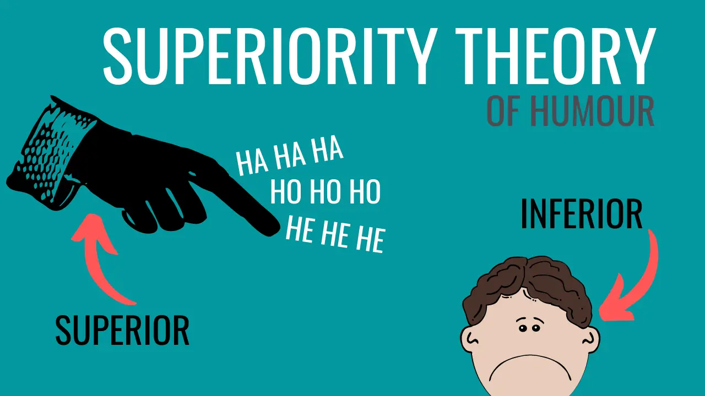
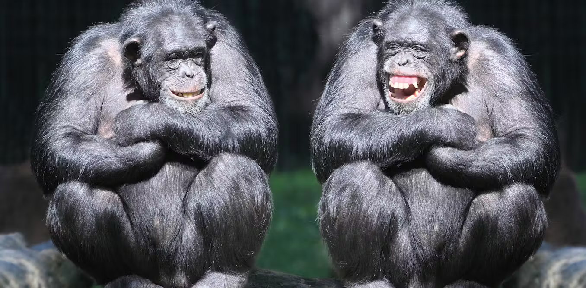

"Perhaps the oldest theory of humor, which dates back to Plato and other
ancient Greek philosophers, posits that people find humor in, and laugh
at, earlier versions of themselves and the misfortunes of others because
of feeling superior." What’s So Funny? The Science of Why We Laugh
Plato was the first known supporter of this theory, followed by Aristotle
and later Thomas Hobbes. This theory came from negative emotions often
originating from being laughed at or made fun of.

"The 18th century gave rise to the theory of release. The best-known version,
formulated later by Sigmund Freud, held that laughter allows people to let off
steam or release pent-up 'nervous energy.' According to Freud, this process
explains why tabooed scatological and sexual themes and jokes that broach
thorny social and ethnic topics can amuse us." What’s So Funny? The Science
of Why We Laugh It is the manifestation of natural pre-conscious thoughts
suppressed by stigma or tension in 'conventional' conversation, with the energy
used to withhold 'inappropriate' thoughts from the conscious mind becoming
released as laughter. Unlike other theories, this one focuses on laughter instead
of the abstract concept of humour.
"People laugh at the juxtaposition of incompatible concepts and at defiance of
their expectations - that is, at the incongruity between expectations and reality."
What’s So Funny? The Science of Why We Laugh
The theory is that the human brain has a vivid imagination that attempts to
predict future events, and when the brain is forced to comprehend two realities
at once, the confusion that results is experienced as humour.
“Three necessary and (jointly) sufficient conditions for humour perception. When
one of these conditions is lacking, there is no humour perception and if all three
are present, humour perception is also there." Humour Research: State of the Art
· V - The violation of a certain commitment of the perceiver about how things ought to be.
· N - The perceiver has the dominating feeling that the certain situation is normal.
· Simultaneity - These two understandings V and N have to be present in the mind of
the perceiver at the same time.
This theory aims to combine the incongruity and superiority theories by turning them
into individual conditions to be fulfilled for humour to manifest. The violation component
matches with the incongruity theory and the understanding component in turn corresponds
with feelings of superiority towards the past self.
"Friends are more likely to produce spontaneous laughs, while strangers who lack an
established emotional connection are more likely to produce volitional laughter… The
acoustic characteristics of authentic laughter are therefore useful cues to the bonds
between and status of members of a group." The evolutionary origins of laughter are
rooted more in survival than enjoyment
In this theory, laughter is utilised as a sign of trustworthiness, alliance, and social status.

"Derks traced the pattern of brainwave activity in subjects responding to humorous
material. Subjects were hooked up to an electroencephalograph (EEG) and their brain
activity was measured when they laughed. In each case, the brain produced a regular
electrical pattern. Within four-tenths of a second of exposure to something potentially
funny, an electrical wave moved through the cerebral cortex, the largest part of the brain.
If the wave took a negative charge, laughter resulted. If it maintained a positive charge,
no response was given, researchers said.
During the experiment, researchers observed the following specific activities:
• The left side of the cortex (the layer of cells that covers the entire surface of the forebrain)
analysed the words and structure of the joke.
• The brain's large frontal lobe, which is involved in social emotional responses, became very
active.
• The right hemisphere of the cortex carried out the intellectual analysis required to "get" the
joke.
• Brainwave activity then spread to the sensory processing area of the occipital lobe (the area
on the back of the head that contains the cells that process visual signals).
• Stimulation of the motor sections evoked physical responses to the joke." How Laughter Works
These are the parts of the brain that were most noticeably involved in the carrying out
of laughter, including the cerebral cortex, the frontal lobe, the occipital lobe partially,
and the motor sections.
“To summarize the results of many studies, the expression of laughterseems to depend
on two partially independent neuronal pathways. The first of these, an `involuntary' or
`emotionally driven' system, involves the amygdala, thalamic/hypo- and subthalamic
areas and the dorsal/tegmental brainstem. The second, `voluntary' system originates in
the premotor/frontal opercular areas and leads through the motor cortex and pyramidal
tract to the ventral brainstem. These systems and the laughter response appear to be
coordinated by a laughter-coordinating centre in the dorsal upper pons.” Neural
Correlates of Laughter and Humour The brain activity that causes laughter
results from the collaboration of two different systems of neurons. These are the unconscious
system, consisting of the amygdala, thalamus, hypothalamus, subthalamus, dorsal brainstem,
and tegmental brainstem, and the conscious, in which a thought process travels through the
premotor and frontal opercular areas, the motor cortex, and the pyramidal tract into the ventral
brainstem. The end result is coordinated and processed in the dorsal upper pons.
Brain, M. (2000, April). How Laughter Works. HowStuffWorks.
.
Mulder, M. P., & Nijholt, A. (2003). Humour research: State of the art (pp. 5–6). Center for
Telematics and Information Technology, TKI-Parlevink Research Group, University of Twente.
.
Raine, J. (2016, April 13). The Evolutionary Origins of Laughter Are Rooted More in Survival
than Enjoyment. The Conversation. The Conversation
.
Sabato, G. (2019, June 26). What’s so funny? The science of why we laugh. Scientific American.
.
Sandling, J. (2021, March 21). Plato on Humour and Laughter | JONATHAN SANDLING. Jonathansandling.com.
Jonathan Sandling Accessed for illustration only.
.
Wild, B., Rodden, F. A., Grodd, W., & Ruch, W. (2003). Neural correlates of laughter and humour. Brain, 126(10), 2121–2138.